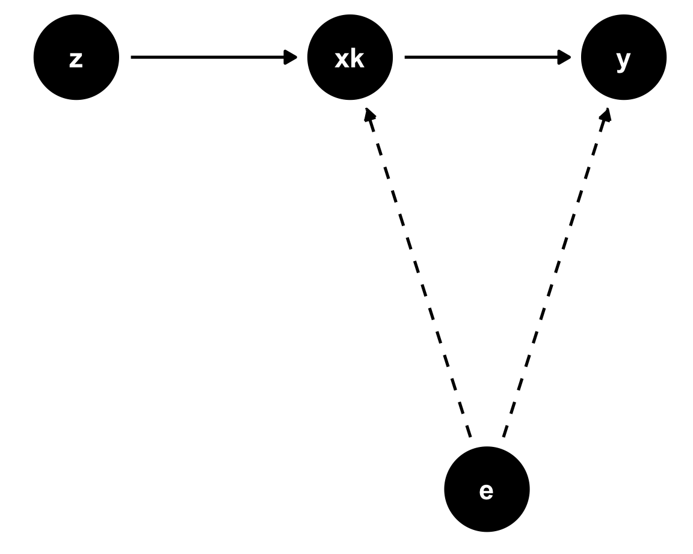

── Attaching core tidyverse packages ──────────────────────── tidyverse 2.0.0 ──
✔ dplyr 1.1.4 ✔ readr 2.1.5
✔ forcats 1.0.0 ✔ stringr 1.5.1
✔ ggplot2 3.5.2 ✔ tibble 3.2.1
✔ lubridate 1.9.4 ✔ tidyr 1.3.1
✔ purrr 1.0.4
── Conflicts ────────────────────────────────────────── tidyverse_conflicts() ──
✖ dplyr::filter() masks stats::filter()
✖ dplyr::lag() masks stats::lag()
ℹ Use the conflicted package (<http://conflicted.r-lib.org/>) to force all conflicts to become errors
Loading required package: kableExtra
Attaching package: 'kableExtra'
The following object is masked from 'package:dplyr':
group_rows
Attaching package: 'ggdag'
The following object is masked from 'package:stats':
filterInstrumental Variables
EC655 - Econometrics
Justin Smith
Wilfrid Laurier University
Fall 2023
Introduction
Introduction
In many empirical applications we want to estimate a causal effect
- The independent effect of a particular variable on the outcome
OLS is inconsistent for this parameter when the error is correlated with \(\mathbf{x}\)
This happens often with omitted variables
Also, simultaneous equations, measurement error in \(\mathbf{x}\)
If we want to consistently estimate causal parameter, we need a different method
First method we will discuss is Instrumental Variables
Instrumental Variables
Model
Start with a population linear model
\[y = \mathbf{x}\boldsymbol{\beta} + e\]
Define \(\boldsymbol{\beta}\) as the causal effect
A model like the above where \(\boldsymbol{\beta}\) is the causal effect is called a Structural Model
Important
The model above is not the same as the population regression we discussed previously. In this model we are defining \(\boldsymbol{\beta}\) specifically as the causal effect, and therefore \(e\) is not the same as the regression residual we defined before.
Model
Suppose we think some parts of \(\mathbf{x}\) are correlated with \(e\) so that
\[\textbf{E}(\mathbf{x'}e) \neq 0\]
The population least squares regression is not equal to the causal effect
\[\boldsymbol{\beta^{*}}=(\textbf{E}[\mathbf{x'x}])^{-1} \textbf{E}[\mathbf{x}'y]\] \[=(\textbf{E}[\mathbf{x'x}])^{-1} \textbf{E}[\mathbf{x}'(\mathbf{x}\boldsymbol{\beta} + e)]\] \[=\boldsymbol{\beta} + (\textbf{E}[\mathbf{x'x}])^{-1}\textbf{E}[\mathbf{x'}e]\]
Model
In this setup, the OLS estimate of \(\boldsymbol{\beta^{*}}\) is inconsistent for \(\boldsymbol{\beta}\)
- This bias could come from omitted variables, but also other sources
If we want a consistent estimate of \(\boldsymbol{\beta}\) we need another method
To make things simpler, partition the independent variables
\[= \mathbf{x_{1}}\boldsymbol{\beta_{1}} + x_{k}\beta_{k} + e\]
Suppose that \(x_{k}\) is correlated with \(e\), but \(\mathbf{x_{1}}\) is not
- \(x_{k}\) is endogenous
- \(\mathbf{x_{1}}\) is exogenous
Model
Now imagine we have an instrumental variable \(z_{1}\) that is
Uncorrelated with \(e\)
Correlated with \(x_{k}\)
Define the vector \(\mathbf{z}\) to be
\[\mathbf{z} = [1,x_{1}, x_{2}, ...,x_{k-1},z_{1}]\]
It is the \(\mathbf{x}\) vector with \(z_{1}\) in place of \(x_{k}\)
\(\mathbf{x_{1}}\) are included instruments
\(z_{1}\) is the excluded instrument because it comes from outside the model
Model
If all factors in \(\mathbf{z}\) are exogenous,
\[\mathbf{E}(\mathbf{z}'e) = 0\]
If we take our model
\[y = \mathbf{x}\boldsymbol{\beta} + e\]
Pre-multiply by \(\mathbf{z}\) and take expectations
\[\mathbf{E}(\mathbf{z}'y) = \mathbf{E}(\mathbf{z'x}) \boldsymbol{\beta} + \mathbf{E}(\mathbf{z}'u)\]
\[\boldsymbol{\beta} = [\mathbf{E}(\mathbf{z'x})] ^{-1}\mathbf{E}(\mathbf{z}'y)\]
Model
Important
The population Instrumental Variables slope vector with one instrument for each endogenous variable is
\[\boldsymbol{\beta} = [\mathbf{E}(\mathbf{z'x})] ^{-1}\mathbf{E}(\mathbf{z}'y)\]
Model
To be able to identify \(\boldsymbol{\beta}\), we need to assume
Rank condition: \(\text{rank }\mathbf{E}(\mathbf{z'z}) = K+1\)
- The variables in \(\mathbf{z}\) are linearly independent
Relevance condition: \(\text{rank }\mathbf{E}(\mathbf{z'x}) = K+1\)
- The instrument is correlated with the endogenous variable
Combined with the orthogonality condition \(\mathbf{E}(\mathbf{z}'e) = 0\) this means an instrument must be
Uncorrelated with the error term
Correlated with the endogenous variable
Estimation by Method of Moments
Applying the method of moments to the population slope
\[\boldsymbol{\hat{\beta}}=\left ( \frac{1}{n}\sum_{i=1}^{n}\mathbf{z_{i}'x_{i}} \right )^{-1} \left ( \frac{1}{n} \sum_{i=1}^{n}\mathbf{z}_{i}'y_{i}\right ) = \left ( \sum_{i=1}^{n}\mathbf{z_{i}'x_{i}} \right )^{-1} \left ( \sum_{i=1}^{n}\mathbf{z}_{i}'y_{i}\right )\]
\[=\left ( \mathbf{Z'X} \right )^{-1} \left ( \mathbf{Z'y}\right )\]
The IV estimator is very similar to the OLS estimator, except
- The \(\mathbf{X'}\) matrix that premultiplies the \(\mathbf{X}\) matrix and \(\mathbf{y}\) vector is replaced with \(\mathbf{Z'}\)
Two-Stage Least Squares
Overview
In some cases we have more than one instrument for an endogenous variable
Two-Stage Least Squares (TSLS) generalizes the IV model for this situation
- Note: In practice, both models are often called Instrumental Variables
The TSLS procedure is
First Stage: regress endogenous variable on all exogenous variables
Second Stage: regress dependent variable on exogenous \(\mathbf{x}\) variables and predicted value of endogenous variable from first stage
This process keeps only exogenous part of endogenous variable in the second stage
- Purges the endogenous variable of the endogenous component
Structural Equation
To see this mathematically, the structural equation is
\[y = \mathbf{x_{1}}\boldsymbol{\beta_{1}} + x_{k}\beta_{k} + e\]
- \(x_{k}\) is endogenous, and \(\mathbf{x_{1}}\) are exogenous
The vector \(\mathbf{z}\) is now
\[\mathbf{z} = [1,x_{1}, x_{2}, ...,x_{k-1},z_{1}, z_{2},...,z_{m}]\]
Contains \(K\) exogenous \(\mathbf{x}\) variables and \(M\) instruments
Total dimension of this vector is \(L=K+M\)
There are at least as many instruments as endogenous variables
If \(\mathbf{z}\) is exogenous, \(\mathbf{E}(\mathbf{z}'e) = 0\)
First Stage
- In the first stage regress endogenous variables on \(\mathbf{z}\)
\[x_{k} = \mathbf{z}\boldsymbol{\pi} + r\]
- \(\boldsymbol{\pi}\) is the population least squares slope vector
\[\boldsymbol{\pi} = \left ( \mathbf{E}(\mathbf{z'z}) \right )^{-1} \mathbf{E}(\mathbf{z'x_{k}})\]
- The population regression function in this relationship is
\[\mathbf{x}_{k}^{*} = \mathbf{z}\boldsymbol{\pi}\]
First Stage
The intuition behind the first stage is
The first stage regresses the endogenous variable on the instruments
It separates the endogenous variable into the exogenous part and the endogenous part
The predicted value is the exogenous part
The residual is the endogenous part
We only keep the exogenous part for the second stage
Note
In the first stage regression, regress the endogenous variable \(x_{k}\) on all the exogenous variables \(x_{1}\) and \(z_{1} \ldots z_{m}\).
Second Stage
In the second stage, replace \(x_{k}\) with \(\mathbf{x}_{k}^{*}\)
So the vector \(\mathbf{x}^{*}\) is
\[\mathbf{x}^{*} = [1,x_{1}, x_{2}, ...,x_{k-1},x_{k}^{*}]\]
If \(\mathbf{z}\) is exogenous, then so is a linear combination of the \(\mathbf{z}\)
- \(x_{k}^{*}\) is a linear combination of \(\mathbf{z}\)
So we know that \(\mathbf{E}(\mathbf{x}^{*'}e) = 0\)
Premultiply structural equation by \(\mathbf{x}^{*'}\) and take expectations
\[\mathbf{E}(\mathbf{x}^{*'}y) = \mathbf{E}(\mathbf{x^{*'}x}) \boldsymbol{\beta} + \mathbf{E}(\mathbf{x}^{*'}e)\]
Second Stage
- Use \(\mathbf{E}(\mathbf{x}^{*'}e) = 0\) and solve for \(\boldsymbol{\beta}\)
\[\boldsymbol{\beta} = \left(\mathbf{E}(\mathbf{x^{*'}x})\right)^{-1}\mathbf{E}(\mathbf{x}^{*'}y)\]
- It is equivalent to write this as
\[\boldsymbol{\beta} = \left(\mathbf{E}(\mathbf{x^{*'}x^{*}})\right)^{-1}\mathbf{E}(\mathbf{x}^{*'}y)\]
- It is the population regression slope of \(y\) on \(\mathbf{x}^{*}\)
Second Stage
Important
The TSLS regression slope vector is
\[\boldsymbol{\beta} = \left(\mathbf{E}(\mathbf{x^{*'}x^{*}})\right)^{-1}\mathbf{E}(\mathbf{x}^{*'}y)\]
Note that the IV estimator is equivalent to TSLS when there is one instrument for one endogenous variable
As before, these are population moments that we cannot compute directly
We need to estimate them
DAG
Instrumental variables can be depicted in a DAG
There is an unobserved confounder \(e\)
- We cannot control for it
Instrumental variable \(z\) is correlated with \(x\) and uncorrelated with \(e\)
It only affects \(y\) through \(x_k\)

Estimation by Method of Moments
As before, substitute sample versions of population moments to get
Also recall that this is a two-step process
The first stage, is the regression of \(\mathbf{x}\) on \(\mathbf{z}\)
The population slope vector is is
\[\boldsymbol{\pi} = \left ( \mathbf{E}(\mathbf{z'z}) \right )^{-1} \mathbf{E}(\mathbf{z'x_{k}})\]
- The sample version is
\[\boldsymbol{\hat{\pi}} = \left( \mathbf{Z'Z} \right)^{-1}\mathbf{Z'x_{k}}\]
Estimation by Method of Moments
- The predicted values of \(x_{k}\) are
\[\mathbf{\hat{x}}_{k} = \mathbf{Z}\boldsymbol{\hat{\pi}}\]
The second stage replaces \(x_{k}\) with \(\mathbf{\hat{x}}_{k}\)
The sample regression slope vector is
\[\boldsymbol{\hat{\beta}} = \left( \mathbf{\mathbf{\hat{X}}'\mathbf{\hat{X}}} \right)^{-1}\mathbf{\mathbf{\hat{X}}'y}\]
Estimation by Method of Moments
When there is one endogenous variable, the matrix \(\mathbf{\hat{X}}\) is
\[\mathbf{\hat{X}} = \begin{bmatrix} 1 & x_{11} & x_{12} &\cdots&x_{1,k-1} & \hat{x}_{1k}\\ 1 & x_{21} & x_{22} &\cdots&x_{2,k-1} & \hat{x}_{2k}\\ \vdots & \vdots & \ddots &\vdots &\vdots \\ 1 & x_{n1} & x_{n2} &\cdots&x_{n,k-1} & \hat{x}_{nk} \end{bmatrix} = \begin{bmatrix} \mathbf{X_{1}} & \mathbf{\hat{x}_{k}} \end{bmatrix}\]
Important
The TSLS estimator is
\[\boldsymbol{\hat{\beta}} = \left( \mathbf{\mathbf{\hat{X}}'\mathbf{\hat{X}}} \right)^{-1}\mathbf{\mathbf{\hat{X}}'y}\]
Intuition
The starting point for TSLS is an endogenous variable
A variable that is correlated with \(e\)
Usually because of omitted variables bias
OLS will not consistently identify the slope vector \(\boldsymbol{\beta}\)
We have access to at least one variable from outside the model that is
Uncorrelated with the error term \(e\)
Correlated with the endogenous variable \(x_{k}\)
Intuition
The first stage regresses \(x_{k}\) on all exogenous variables
Separates \(x_{k}\) into two pieces
The exogenous part: the piece that is correlated with the exogenous variables
The endogenous part: the residual from this regression, which is uncorrelated with the exogenous piece
The first stage purges the endogenous component from \(x_{k}\)
Keeps only the exogenous component, \(\hat{x}_{k}\)
We use the only the exogenous piece \(\hat{x}_{k}\) in the second stage regression
Statistical Properties of TSLS
Introduction
Like we did with the OLS estimator, we cover the statistical properties of TSLS
- We will be slightly less detailed
We first need to outline the set of assumptions required for consistency
Assumptions
\(\mathbf{E}(\mathbf{z}'e) = 0\)
The vector of exogenous variables is uncorrelated with \(u\)
This is sometimes called the exclusion restriction
- The instruments come from outside the model and are uncorrelated with the error
Assumptions
\(\text{rank } \mathbf{E}(\mathbf{z'z}) = L\) and \(\text{rank } \mathbf{E}(\mathbf{z'x}) = K\)
First part says that none of the variables in \(\mathbf{z}\) are perfectly collinear
Second part is the rank condition
The instruments must be sufficiently correlated with the endogenous variable
We will come back to this when we talk about weak instruments
For this assumption to hold we also need to meet the order condition
There are at least as many instruments as endogenous variables
Mathematically, we need \(L\ge K+1\)
\(\{(\mathbf{x}_{i},\mathbf{z_{i}}, y_{i}: i=1,2,...n)\}\) are a random sample
Consistency
If all of the assumptions are met, the TSLS estimator is consistent for \(\boldsymbol{\beta}\)
We will not do the proof, but it is very similar to OLS
If any of the assumptions fail, the TSLS estimator is inconsistent
Unbiasedness
In small samples, the TSLS estimator is generally biased
We will not cover the proof
You should only use TSLS with large samples
Large Sample Distribution of \(\boldsymbol{\hat{\beta}}\)
We again appeal to the Central Limit Theorem
With large \(n\), the TSLS estimator has a Normal distribution with mean \(\boldsymbol{\beta}\) and variance
\[\text{var}(\boldsymbol{\hat{\beta}}) = n^{-1}[\mathbf{E}(\mathbf{x^{*'}x^{*}})^{-1}]\mathbf{E}(u^2\mathbf{x^{*'}x^{*}})[\mathbf{E}(\mathbf{x^{*'}x^{*}})^{-1}]\]
If we assume homoskedasticity \(\mathbf{E}(u^2|\mathbf{z}) = \sigma^2\) this reduces to
\[\text{var}(\boldsymbol{\hat{\beta}}) = \sigma^2 n^{-1}\mathbf{E}(\mathbf{x^{*'}x^{*}})^{-1}\]
Variance Estimator for \(\boldsymbol{\hat{\beta}}\)
To estimate the variance, substitute sample versions of the population moments
The Heteroskedasticity-Robust variance estimator is
\[\hat{\text{var}}(\boldsymbol{\hat{\beta}}) = \left (\mathbf{\hat{X}'\hat{X}}\right )^{-1}\left ( \sum_{i=1}^{n}\hat{u}_{i}^2\mathbf{\hat{x}_{i}'\hat{x}_{i}}\right )\left ( \mathbf{\hat{X}'\hat{X}}\right )^{-1}\]
If we assume homoskedasticity, it is
\[\hat{\text{var}}(\boldsymbol{\hat{\beta}}) = s_{\hat{u}}^2 \left (\mathbf{\hat{X}'\hat{X}}\right )^{-1}\]
In both cases, we use the TSLS residuals, which are
\[\mathbf{\hat{u}} = \mathbf{y} - \mathbf{X}\boldsymbol{\hat{\beta}}\]
Variance Estimator for \(\boldsymbol{\hat{\beta}}\)
These are not the residuals from the second stage regression \(\mathbf{y} - \mathbf{\hat{X}}\boldsymbol{\hat{\beta}}\)
Use \(\mathbf{X}\) – not \(\mathbf{\hat{X}}\) – in this calculation
This is a common mistake
Using the wrong residuals will lead to incorrect estimates of the standard errors
Structural and Reduced Form in TSLS
Structural vs Reduced form Equations
In this section we present details that are useful for using TSLS in practice
This will help you understand when you read papers using TSLS
Suppose we have a model with one endogenous variable and one instrument
The instrumental variables model in scalar notation is
\[y = \beta_{0} + x_{1}\beta_{1} +...+ x_{k-1}\beta_{k-1} + x_{k}\beta_{k} + e\] \[x_{k} = \pi_{0} + x_{1}\pi_{1}+...+x_{k-1}\pi_{k-1} +z_{1}\delta_{1} + r\]
The first equation is the structural equation
- The equation containing the causal effects we are interested in
Structural vs Reduced form Equations
The second equation is the first stage
It is a reduced form equation
All of the regressors are exogenous
The parameters do not necessarily represent causal effects
Researchers often also estimate the reduced form for \(y\)
- Sub the second equation into the first to get
\[y = (\beta_{0} + \beta_{k}\pi_{0}) + x_{1}(\beta_{1} + \beta_{k}\pi_{1}) +...+ x_{k-1} (\beta_{k-1}+ \beta_{k}\pi_{k-1}) + z_{1}\beta_{k}\delta_{1} + e + \beta_{k}r\]
\[= \gamma_{0}+ x_{1}\gamma_{1}+...+ x_{k-1} \gamma_{k-1}+ z_{1}\theta_{1}+ \epsilon\]
- This is the regression of \(y\) on all the exogenous variables
Structural vs Reduced form Equations
In the reduced form for \(y\), the slope \(\theta_{1} = \beta_{k}\delta_{1}\)
- The effect of \(z_{1}\) on \(x_{k}\) times the effect of \(x_{k}\) on \(y\)
You can get the slope \(\beta_{k}\) by dividing the reduced form by the first stage
\[\beta_{k} = \frac{\theta_{1}}{\delta_{1}}\]
\(\beta_{k}\) is the reduced form effect scaled by the first stage
Ex: returns to schooling
Imagine \(y\) is income, \(x_{k}\) is years of schooling, \(z_{1}\) is kms to nearest university
If \(\delta_{1} = .5\), being 1km closer to school leads to .5 more years of schooling
If \(\theta_{1} = 10000\), being 1km closer to school leads to $10000 more income
Then \(\beta_{k} = \frac{10000}{.5} = 20000\) is effect of a year of additional schooling
Checking Instrument Validity
Introduction
There are two main assumptions for instrumental variables
Exclusion restriction: instruments are from outside the model and uncorrelated with \(e\)
Rank condition: excluded instruments are sufficiently related to the endogenous variable
- This is sometimes also called the instrument relevance condition
Failure of either creates problems
To understand these issues, it is useful to study the following model
\[y = \beta_{0} + \beta_{1}x_{1} + e\]
\[x_{1} = \pi_{0} + \pi_{1}z_{1} + r\]
Introduction
- In this model, you can show that
\[\text{plim }\hat{\beta}_{1} = \beta_{1} + \frac{cov(z_{1},e)}{cov(z_{1},x_{1})}\] \[= \beta_{1} + \frac{\sigma_{e}}{\sigma_{x_{1}}}\frac{corr(z_{1},e)}{corr(z_{1},x_{1})}\]
We will use this result to inform ourselves about the failure of our assumptions
The key idea is that instruments must be relevant and exogenous
Exclusion Restriction
- Consider the plim of the TSLS slope estimator
\[\text{plim }\hat{\beta}_{1} = \beta_{1} + \frac{cov(z_{1},e)}{cov(z_{1},x_{1})}\]
If the exclusion restriction holds, then \(cov(z_{1},e) = 0\) and \(\text{plim }\hat{\beta}_{1} = \beta_{1}\)
If not then \(\text{plim }\hat{\beta}_{1} \neq \beta_{1}\) and the TSLS estimator is inconsistent
Can we check to see if this assumption is true?
If we have one excluded instrument for each endogenous variable, we cannot
There are no enough degrees of freedom to test the exclusion restriction
We have to rely only on our assumptions in this case
Exclusion Restriction
With multiple excluded instruments for the endogenous variable, we can
- We use the extra instruments to test whether the others are endogenous
A useful test when errors are homoskedastic is the Sargan Test
Estimate the model using TSLS
Compute the TSLS residuals, \(\mathbf{\hat{u}}\)
Regress \(\mathbf{\hat{u}}\) on all instruments \(\mathbf{z}\)
- Save \(R^2_u\) from this regression
The test statistic is \(nR^2_u\)
- Has a \(\chi^2_{Q_{1}}\) distribution, where \(Q_{1}\) are overidentifying restrictions
The null hypothesis is exogeneity
Exclusion Restriction
There is a more complicated test with heteroskedastic errors
You can easily execute this in R or Stata
We can discuss the process separately
If you fail this test (reject the null), then you need to find other instruments
Instrument Relevance
For TSLS to work, the instrument must be relevant
- It must be sufficiently correlated with the endogenous variable
An instrument that is not sufficiently relevant is a weak instrument
Weak instruments can cause several problems
Inconsistency when the instrument and error are not exactly uncorrelated
- Consider the plim of the TSLS slope estimator
\[\text{plim }\hat{\beta}_{1} = \beta_{1} + \frac{\sigma_{e}}{\sigma_{x_{1}}}\frac{corr(z_{1},e)}{corr(z_{1},x_{1})}\]
Instrument Relevance
Continued...
When \(corr(z_{1},x_{1}) \rightarrow 0\) then \(\frac{corr(z_{1},e)}{corr(z_{1},x_{1})} \rightarrow \infty\)
- True even when \(corr(z_{1},e)\) is very close to zero
Also note that the plim of the OLS estimator is
\[\text{plim }\hat{\beta}_{1}^{ols} = \beta_{1} + \frac{\sigma_{e}}{\sigma_{x_{1}}}corr(x_{1},e)\]
Taking the ratio of the two biases \[\frac{\hat{\beta}_{1}-\beta_{1}}{\hat{\beta}_{1}^{ols}-\beta_{1}} = \frac{corr(z_{1},e)/corr(x_{1},e)}{corr(z_{1},x_{1})}\]
As \(corr(z_{1},x_{1}) \rightarrow 0\), the inconsistency in 2SLS becomes larger than the inconsistency in OLS
Instrument Relevance
Finite sample bias in TSLS becomes large
The expected value of the TSLS estimator can be written as
\[\mathbf{E}(\hat{\beta}_{1} - \beta_{1}) \approx \frac{\sigma_{er}}{\sigma_{r}^2}\frac{1}{F+1}\]
Where \(F\) is the F-statistic from the test of joint significance of the excluded regressors
Weak instruments means that \(F\) is close to zero
As \(F\) gets small, the bias tends to \(\frac{\sigma_{er}}{\sigma_{r}^2}\)
If \(F\) is exactly zero, that means the instrument is irrelevant \((\pi_{1}=0)\)
In this case \(\frac{\sigma_{er}}{\sigma_{r}^2}\) is also the OLS bias
So 2SLS and OLS produce the same biased result
When instruments are weak, TSLS is biased towards OLS
Instrument Relevance
Standard inference is no longer valid
We rely in the central limit theorem to show TSLS estimator has a Normal distribution
With weak instruments, this no longer holds
- The estimator has the distribution of the ratio of two Normal variables
In this case the t-statistic no longer has a t-distribution
Hypothesis tests tend to reject the null more than it should
Instrument Relevance
- There are several tests available to check for weak instruments
Test with one endogenous regressor
Based on F-statistic on excluded instruments in first stage
Critical values for set amount of bias or size distortion
Ex: when \(F=10\) maximum TSLS bias is about 10% of OLS bias
Also when \(F=10\), the rejection rate of a 5% test is no more than 20%
As \(F\) gets larger, relative bias shrinks and test size distortion falls
\(F=10\) is often called “Staiger Stock rule of thumb”, based on authors who developed it
Generally thought that when \(F>10\), instruments are not weak
Instrument Relevance
Test with more than one endogenous regressor
Suppose you have two endogenous variables and two instruments
You could compute a first stage \(F\) for each endogenous variable
Problem arises when you have one instrument that is strong in both first stages
In this case you have one strong and one weak instrument
Cragg-Donald F-Statistic is modified F-stat for doing this test jointly
Test that are heteroskedasticity-robust
Both tests described above assume homoskedastic errors
Kelibergen-Paap adjusted the test for heteroskedasticity
Otherwise, works in the same way as described above
Instrument Relevance
- Finally, what if we fail the weak instrument tests?
Find better instruments or drop weak ones
If your model is overidentified, you can drop the weak instruments
If it is exactly identified, you could try to find better instruments
- This is not easy since instruments generally come from natural experiments
Use weak instrument robust inference
As noted, t-tests will reject the null too often with weak instruments
You can adjust testing to have the correct size
There are several available
Anderson Rubin (AR)
Conditional Likelihood Ration (CLR)
We will not cover the details of this, but all are available in Stata
Interpretation of Slope in IV Models
Introduction
The Rubin model tells us how to interpret the slope in a regression model
Specific interpretation depends on assumptions
If we make strong assumption that treatment is randomly assigned, regression slope is the average treatment effect (ATE)
Weaker assumption of mean independence or conditional mean independence of \(y_{0}\) gives us average treatment effect on the treated (ATT)
But in an instrumental variables model, these assumptions are violated
The error term is correlated with treatment
So we cannot assume mean independence of the error
In this section, we alter the Rubin model to interpret the slope in an IV model
Local Average Treatment Effects
Start with the observed outcomes from the Rubin model \[y = y_{0} + (y_{1} -y_{0})w\]
Now suppose we have a binary instrument \(z\)
- This variable measures your assignment to treatment
Define observed treatment as \[w = w_{0} + (w_{1} -w_{0})z\]
\(w_{1}\) is potential treatment when assigned to treatment
\(w_{0}\) is potential treatment when not assigned to treatment
We observe \(w=w_{0}\) when \(z=0\) and \(w=w_{1}\) when \(z=1\)
Local Average Treatment Effects
Assume that the instrument is independent of treatment and outcomes \[(y_{0}, y_{1}, w_{0}, w_{1}) \perp z\]
The TSLS estimator is the reduced form divided by the first stage
In this setup with binary \(y\), the reduced form is
\[E(y|z=1) - E(y|z=0)\]
and with binary \(w\) the first stage is
\[E(w|z=1) - E(w|z=0)\]
So that the IV estimator is
\[\frac{E(y|z=1) - E(y|z=0)}{E(w|z=1) - E(w|z=0)}\]
Local Average Treatment Effects
To get the numerator, first substitute \(w\) equation into \(y\) equation \[y = y_{0} + (y_{1} -y_{0})w_{0} + (y_{1} -y_{0})(w_{1} -w_{0})z\]
This allows us to write the following conditional expectations \[E(y|z=1) = E(y_{0}) + E((y_{1} -y_{0})w_{0}) + E((y_{1} -y_{0})(w_{1} -w_{0}))\] \[E(y|z=0) = E(y_{0}) + E((y_{1} -y_{0})w_{0})\]
So, \[E(y|z=1) - E(y|z=0) = E((y_{1} -y_{0})(w_{1} -w_{0}))\]
Local Average Treatment Effects
Note that \[E((y_{1} -y_{0})(w_{1} -w_{0}))\] \[= E(y_{1} -y_{0}|w_{1} -w_{0} = 1)P(w_{1} -w_{0} = 1)\] \[- E(y_{1} -y_{0}|w_{1} -w_{0} = -1)P(w_{1} -w_{0} = -1)\] \[+0\times E(y_{1} -y_{0}|w_{1} -w_{0} = 0)P(w_{1} -w_{0} = 0)\]
The last term drops out since it is zero
Reduced form is the difference in treatment effect between two groups
\(E(y_{1} -y_{0}|w_{1} -w_{0} = 1)\) is the treatment effect for “compliers”
- Compliers have \(w_{1}=1\) and \(w_{0} = 0\), so that \(w_{1} -w_{0} = 1\)
\(E(y_{1} -y_{0}|w_{1} -w_{0} = -1)\) is the treatment effect for “defiers”
- Defiers have \(w_{1}=0\) and \(w_{0} = 1\), so that \(w_{1} -w_{0} = -1\)
Local Average Treatment Effects
Problem: reduced form might be 0 even with positive treatment effects for both groups
Suppose \(E(y_{1} -y_{0}|w_{1} -w_{0} = 1) = E(y_{1} -y_{0}|w_{1} -w_{0} = -1)\)
Then \(E(y|z=1) - E(y|z=0) = 0\) and reduced form effect is zero
Makes it difficult to measure treatment effects
To correct for this, we must assume monotonicity \[w_{1} \ge w_{0}\]
Says effect of instrument goes one way
If assigned to treatment you take it, if not you don’t take it
Precludes defiers who don’t take treatment when assigned, take it when not assigned
Local Average Treatment Effects
Monotonicity implies \(P(w_{1} -w_{0} = -1) = 0\), so \[E(y|z=1) - E(y|z=0)\] \[= E(y_{1} -y_{0}|w_{1} -w_{0} = 1)P(w_{1} -w_{0} = 1)\]
With monotonicity \((w_{1} -w_{0})\) can equal 0 or 1, so
\[E(w_{1} - w_{0}) = 1\times P(w_{1} -w_{0} = 1) + 0\times P(w_{1} -w_{0} = 0)\] \[=P(w_{1} -w_{0} = 1)\]
Using this in the reduced form gives us
\[E(y|z=1) - E(y|z=0)\] \[= E(y_{1} -y_{0}|w_{1} -w_{0} = 1)E(w_{1} -w_{0})\]
Local Average Treatment Effects
To derive the denominator, remember potential treatment are independent of \(z\) \[E(w |z=1) -E(w|z = 0) = E(w_{1} -w_{0})\]
Combining the numerator and denominator \[\frac{E(y|z=1) - E(y|z=0)}{E(w|z=1) - E(w|z=0)} = \frac{E(y_{1} -y_{0}|w_{1} -w_{0} = 1)E(w_{1} -w_{0}) }{E(w_{1} -w_{0}) }\]
\[= E(y_{1} -y_{0}|w_{1} -w_{0} = 1)\]
Says the IV estimator equals \(E(y_{1} -y_{0}|w_{1} -w_{0} = 1)\)
This is known as the Local Average Treatment Effect (LATE)
The average treatment effect among compliers
Can interpret as treatment effect among people influenced by instrument
Examples of LATE
Smith (2009)
Effect of school entry age on test scores
Uses “assigned entry age” as instrument for actual entry age
LATE: measures effect of entry age on test scores for people who follow rules
Angrist (1990)
Effect of military service on earnings
Uses draft eligibility as determined by lottery as instrument for military service
LATE: measures effect of military service for those who complied with the draft lottery
Key: often the “complier” subpopulation is different from the average population
- So LATE \(\neq\) ATE in general